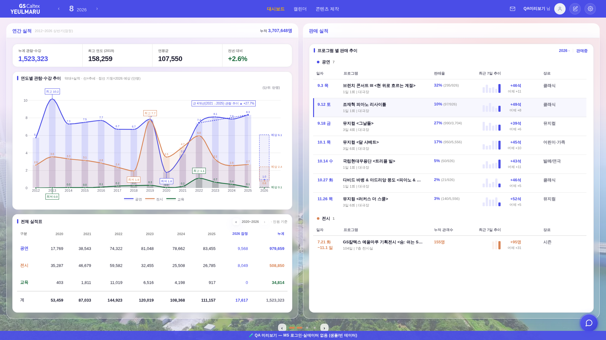
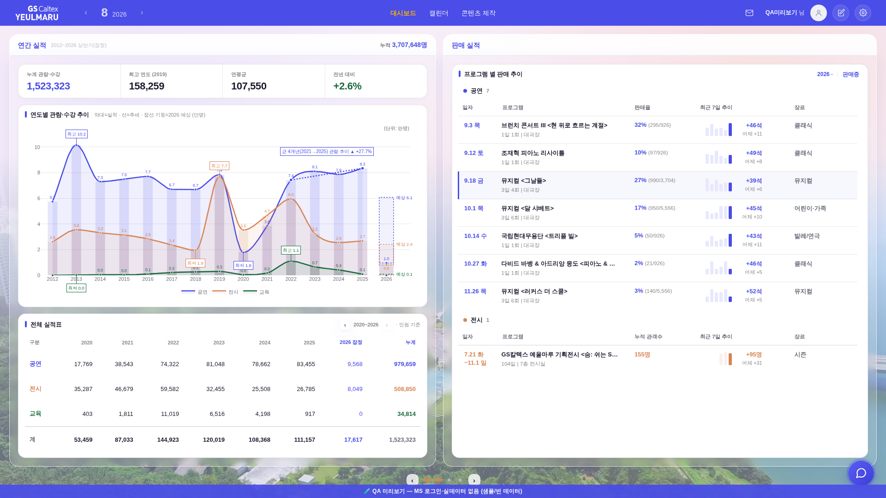
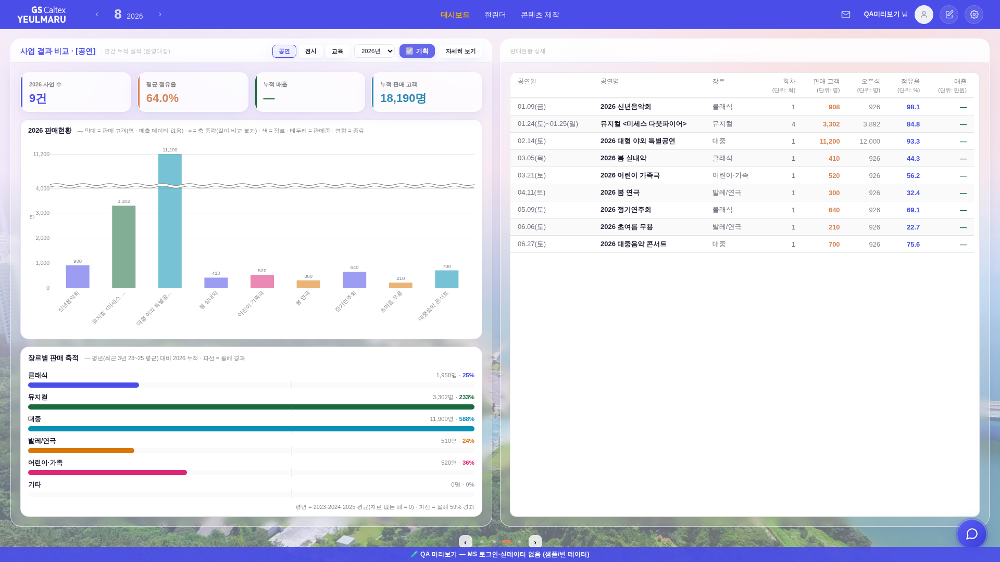
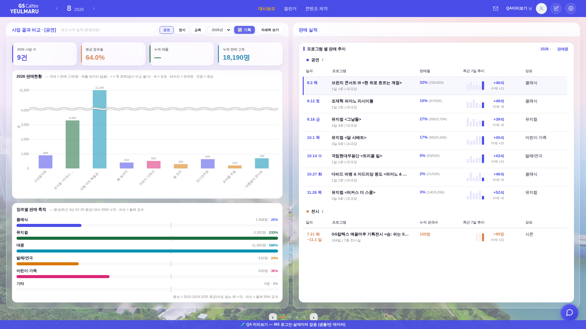
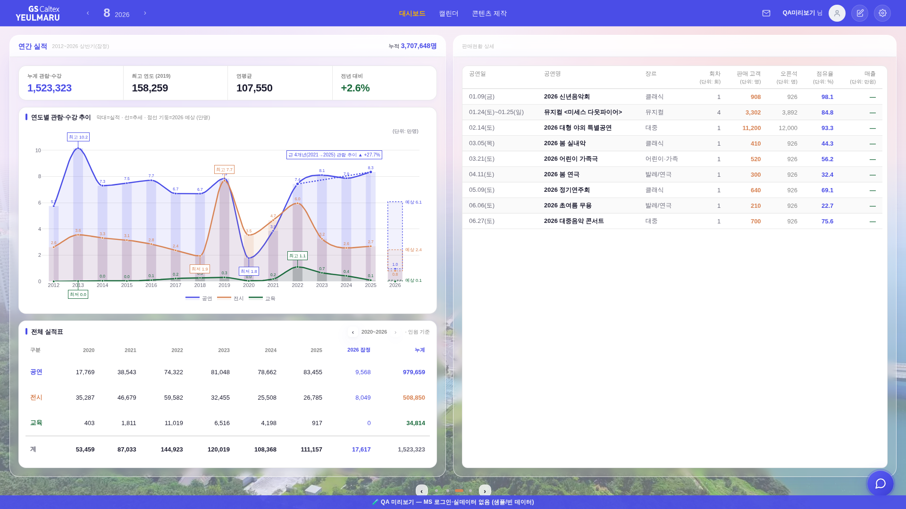
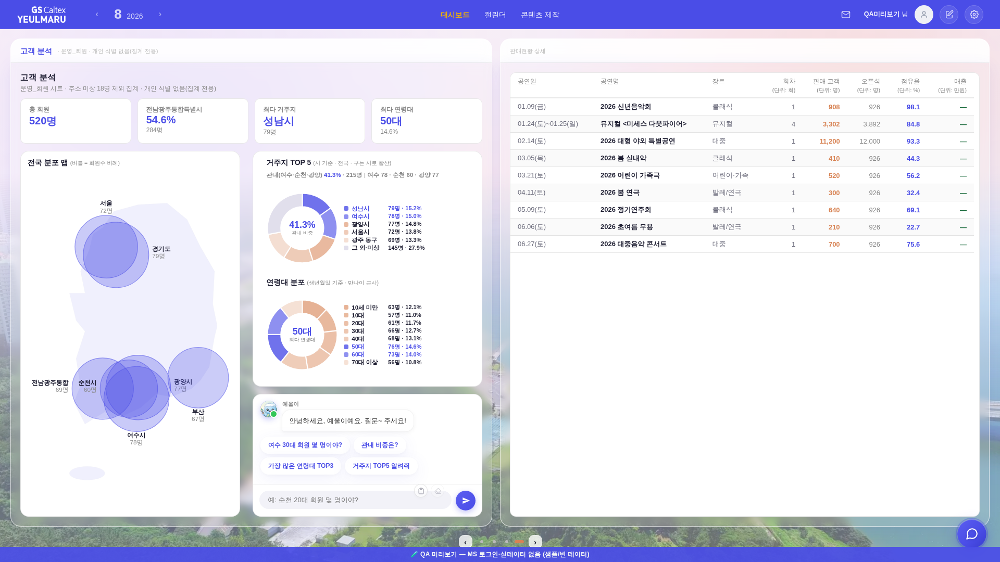

지시(운영자): 「이 페이지[사업 결과 비교]가 맨, 메인화면에 연간 실적이랑 교체되게 해줄래? 그리고 슬라이드 누르면 현재 판매되는 공연이 > 첨부2[판매현황 상세]로 바뀌게 해주고, 다시 슬라이드 누르면 첨부2에서 바뀐부분은 그대로 있고, 연간실적이 나오게」
화면 = QA 진입로(?qa=admin) + 레이아웃 스모크와 같은 목데이터(tools/qa_mock_ops.mjs) · 실데이터·PII 미접촉. 1920×1080 · admin(4칸).
| 넘김 | 전 (좌 ▐ 우) | 후 (좌 ▐ 우) |
|---|---|---|
| 1 | 연간 실적 ▐ 판매 실적 | 사업 결과 비교 ▐ 판매 실적 |
| 2 | (고정면 2 — 넓은 화면에선 점이 무동작이라 1과 같은 화면) | 사업 결과 비교 ▐ 판매현황 상세 |
| 3 | 사업 결과 비교 ▐ 판매현황 상세 (두 열이 같이 바뀜) | 연간 실적 ▐ 판매현황 상세 (우측 그대로) |
| 4 | 고객 분석 ▐ 판매 실적 | 고객 분석 ▐ 판매현황 상세 |
핵심 차이 = 한 번 누르면 한 열만 바뀐다. 전에는 면 하나에 두 열이 묶여 있어 3번에서 좌·우가 동시에 갈렸다.






_bizmState.rdet(0|1) 신설. 구판은 우 열 내용이 page에서 파생돼(_bizPageIsPair) 두 열이 한 몸이었다._BIZ_SLIDES=[{p:3,d:0},{p:3,d:1},{p:1,d:1},{p:4,d:1}]. 순서를 바꾸려면 이 줄만 고치면 되고 렌더러는 무접촉._bizRightNeedsRedraw가 rightId 동일('3-2')을 보고 우 열을 다시 그리지 않는다. 디졸브(_bizmFlip)도 바뀐 열에만 걸린다 = 우측이 깜빡이지 않는다._bizDotCur)._BIZ_NARROW_SEQ=[3,2,1,4] — 위 차례를 읽는 순서대로 편 것. 3면은 좁은 화면에서 상세(3-2)까지 한 열에 다 그리므로 따로 두지 않는다._srailRenderInner의 갱신 판정을 열별로 쪼갰다. 구판은 「좌가 3면일 때만」이라, 좌 연간 실적·고객 분석과 짝을 이룬 우 상세(슬라이드 3·4)가 갱신에서 소외됐다._bizPageIsPair 철거 — 호출처 전부가 실제로 묻던 건 「지금 우 열이 후반을 들고 있는가」였고, 그 답은 이제 _bizRightIsDetail()에 있다. 면 성질 표(_BIZ_PAGE_KIND)는 그대로 정본.tools/check_design.py — 통과(raw hex index 1590/1590 · :root 2/0 · 신규 토큰 0).tools/smoke_layout.mjs — 1920×1080 · 1600×900 · 1366×768 · 1280×800 · 2560×1440 전건 PASS(이젤 상·하단선 Δ0 · 흰 카드 하단 Δ0 · 안선 밀착 · 흔들림 0)._bizmTo 인자가 면 번호가 아니라 슬라이드 자리라, 구판 루프([3,4,1])는 의도와 다른 조합을 재고 있었다. 이제 _bizSlides()를 읽어 전 슬라이드를 돌고 1번으로 복귀한다.sleep → 기하 정착 대기(settle). 좌 열이 연간 실적인 슬라이드는 Plotly 차트가 늦게 그려져 고정 대기가 과도기를 재는 간헐 FAIL이 있었다(실제 파손 아님 · 하네스 타이밍). 3회 연속 PASS로 확인.4번째 넘김(고객 분석)의 우측을 판매현황 상세 유지로 뒀다(위 표 · 「바뀐 부분은 그대로」를 끝까지 적용).
「고객 분석에서는 우측이 판매 실적으로 돌아오는」 쪽이 맞다면 _BIZ_SLIDES 마지막 칸을 {p:4,d:0}으로 바꾸면 끝이다(그 외 무접촉).
첫 화면이 「사업 결과 비교」가 되면서 부팅 첫 페인트가 운영대장 로딩(스윕 로더)을 한 번 거친다 — 구 첫 화면 「연간 실적」은 정적 데이터(_YR)라 즉시 그려졌다. 로더는 이 면의 기존 규약 그대로다.